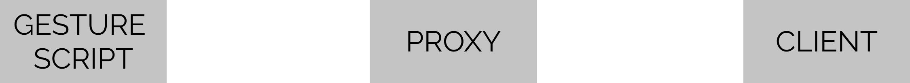
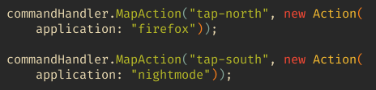
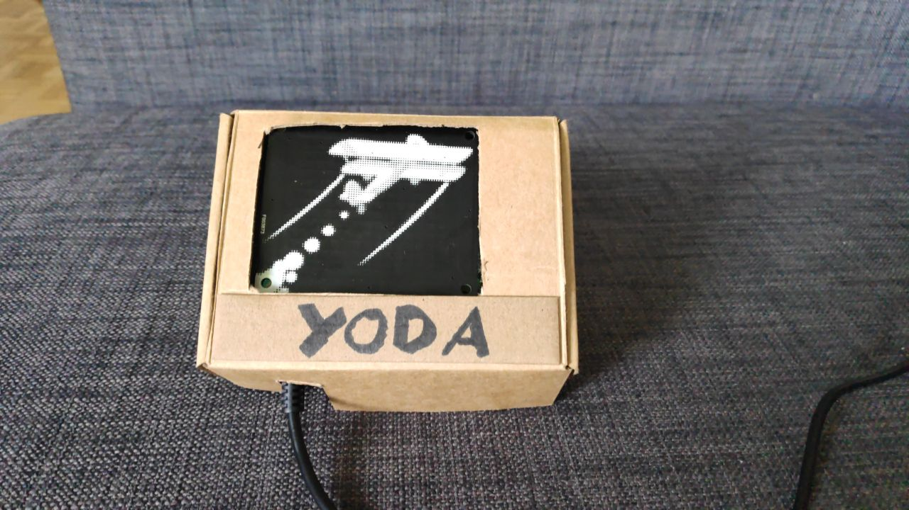
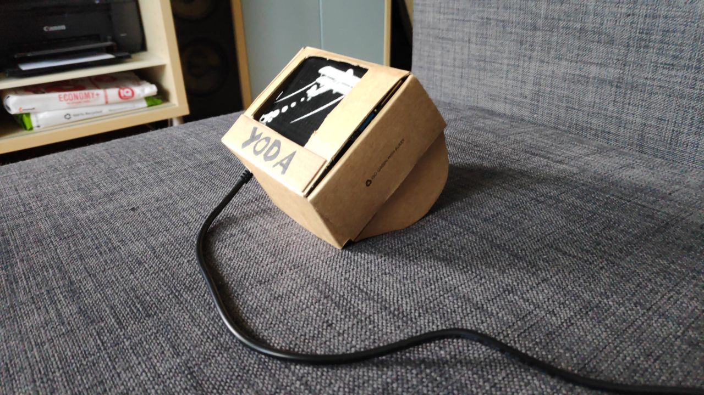
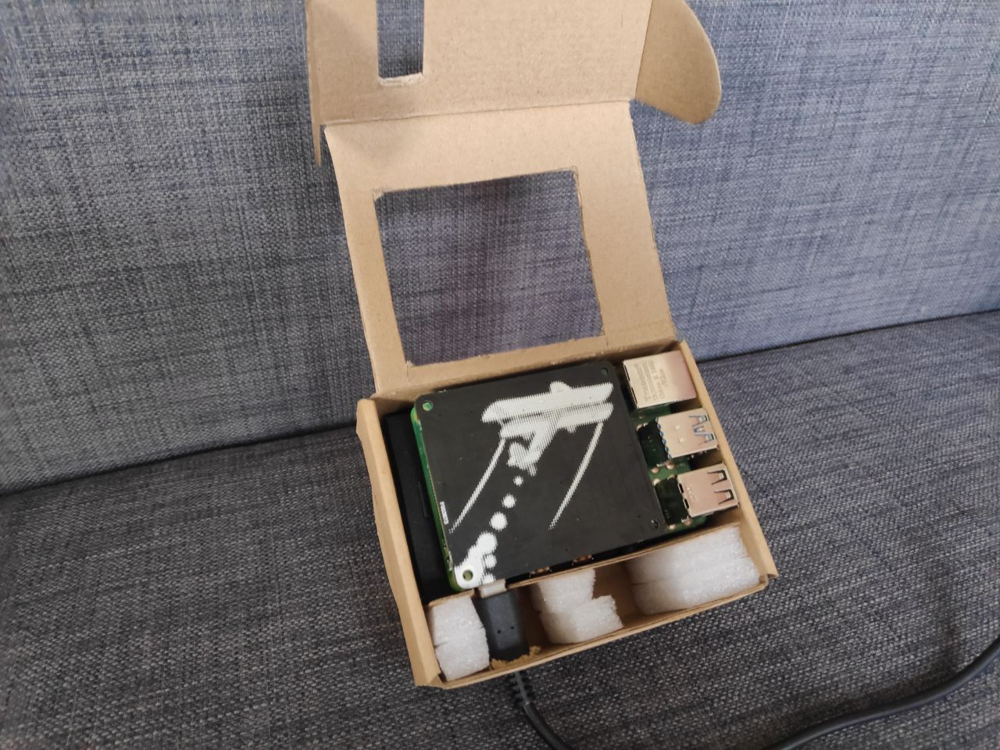

Created: 2021-06-09 Wed 19:49
The aim of this prototype is to explore various possibilities to interact and control devices by using a series of pre-defined hand gestures.
Skywriter HAT board. (e.g.
Flick, Tap,…)
Figure 1: the three main modules



